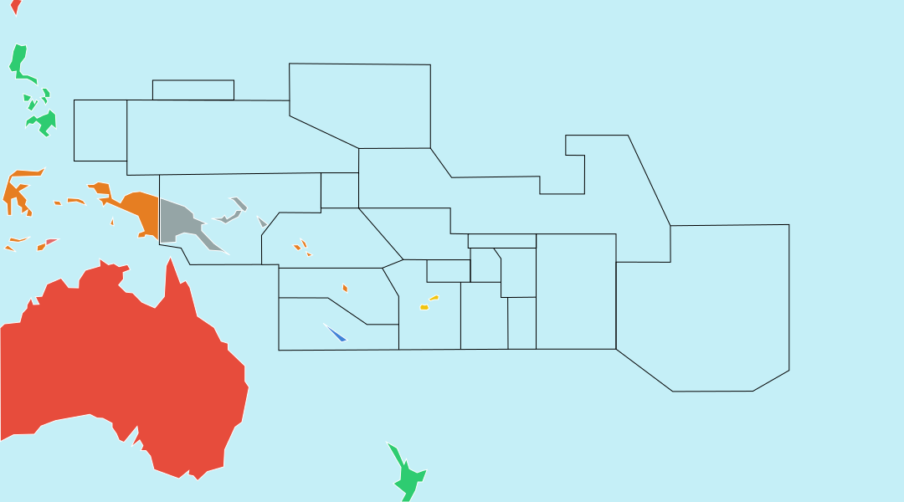

Description
Geography app to learn world countries in a fun way.
Your mission, should you decide to accept it, is to validate all countries.
A country is validated as soon as you found it two times in only one try.
Maps
Some countries are too small to be shown on the main map. You can learn about them in the following two maps of Europa and Oceania. Note that there are some other small islands not shown, e.g. the Falkland islands, but none recognized as independent or near some smaller islands that are shown.

French Polynesia (France)
Version
2.2
License
GNU Affero GPL v3.0
Authors
Michael M., Valéry Febvre